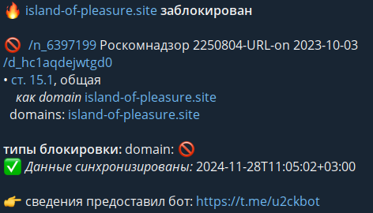

| Ник | Пост | Дата |
|---|---|---|
| RedCapcha(Red Capcha) | Не открывается сайт, раньше удавалось запускать, сейчас же выдаёт некую ошибку DNS. Переключать -9, -8 и тд пробовал, не помогло. С VPN сайт спокойно работает. | 2024-11-27T22:47:30.103Z |
| Cheeck | Открывается без обхода. | 2024-11-28T01:23:11.207Z |
| RedCapcha(Red Capcha) | В том то и дело, что не открывается, в чём может быть проблема? | 2024-11-28T07:33:47.950Z |
| Chatlanin | мгагага, уже сайты с прн-хой начали кидать на проверку, вы хоть предупреждайте, без обхода не открывается | 2024-11-28T07:59:51.997Z |
| electrifying |
Так а что тут такого? Их ркн банит активно и уже давно | 2024-11-28T08:30:34.211Z |
| Chatlanin | Потом в качестве бесплатной рекламы бутут тут сайты по продаже нр-тиков или прху с зооф-ей кидать с прозьбой проверить или еще какой херни. Если для вас это норма то проверяйте. | 2024-11-28T08:58:07.566Z |
| Ori |
Откройте в браузере | 2024-11-28T09:26:43.819Z |
| Anonimno(Anonimno) |
А не должен:  | 2024-11-28T10:03:03.950Z |
| RedCapcha(Red Capcha) | Вроде сделал то что ты описал, что такое резолвер не знаю. Что дальше делать? | 2024-11-28T11:32:03.994Z |
| RedCapcha(Red Capcha) | Ну мы не в сказке живём, привыкнуть давно пора. Я вот вообще не понимаю зачем его заблочили. Раньше через GBDPI открывался, сейчас и с ним что-то не работает. | 2024-11-28T11:33:42.930Z |
| RedCapcha(Red Capcha) | Спасибо, что пытался помочь, случайно сам нашёл решение. Прописал гугловский DNS и всё заработало. | 2024-11-28T11:41:05.591Z |
{kind=link}
{kind=link}
{kind=link}